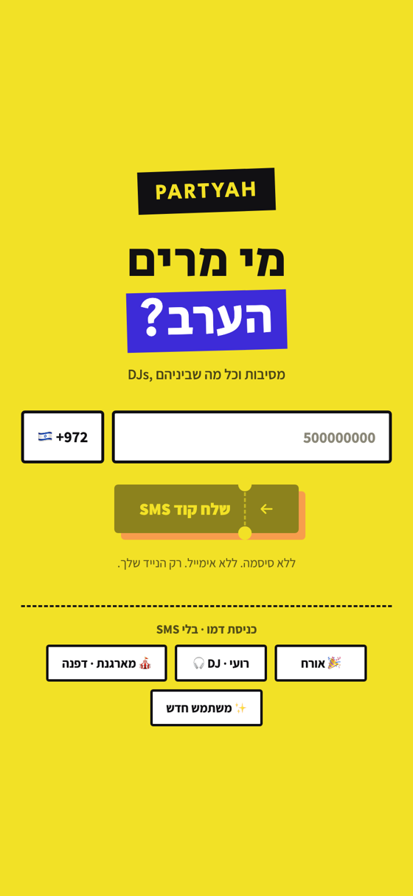
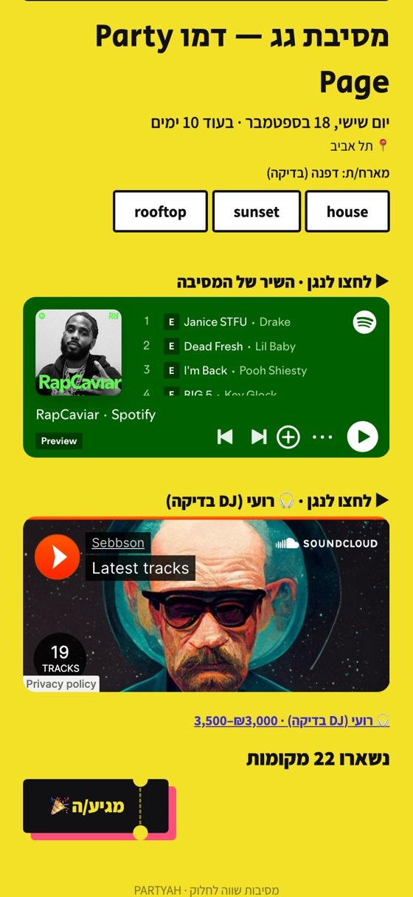
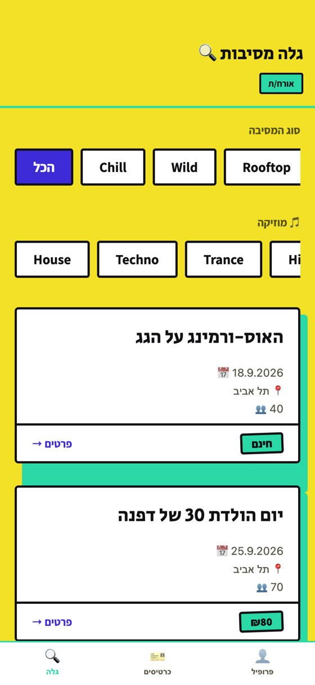
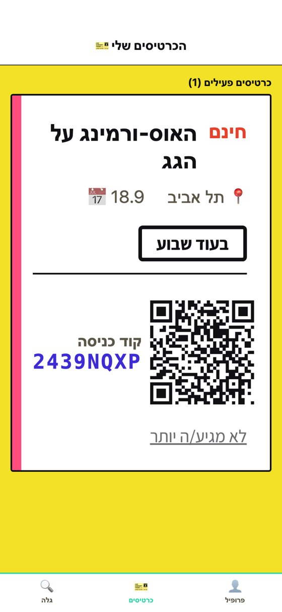
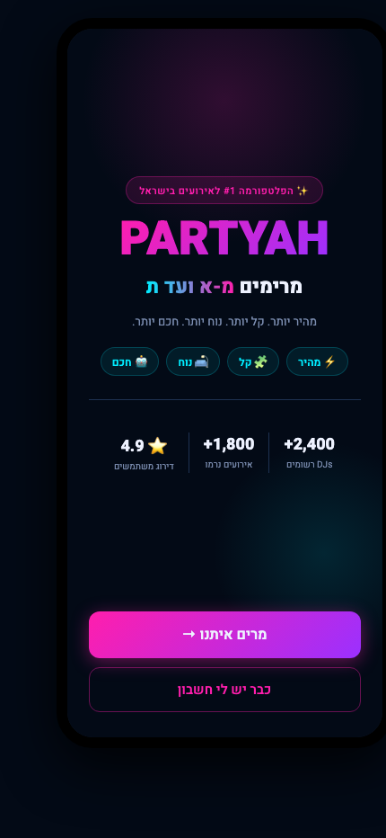

PARTYAH
Live demoReact NativeAn Israeli event marketplace. Organisers book DJs, DJs manage gigs, guests walk in with a QR ticket. Hebrew-first, right-to-left, mobile.
Pre-launch on a live production backend. Every core flow was walked end to end against the real database and logged: phone login, a seven-step event wizard, DJ search and booking, notifications fired by database triggers, door-mode QR scanning, and a public Party Page you can send in a WhatsApp message.
- 726 tests, 47 suites, re-run the day this page went up
- 29 migrations applied to a live PostgreSQL 17
- Row-level security on all 23 tables, advisors driven to zero
- CI gate: typecheck, lint, tests and a gitleaks secret scan
- Scheduled jobs, rate limiting, and an audit trail of every backend action
- Money never guessed: stored in agorot, one integer, no floats
My role: I set the nine rules this codebase obeys, including money as integers and row-level security on every table, and sent back everything that broke one.




Login · the shareable Party Page · discover · a ticket at the door. Captured from the live demo, on seed data.

Twelve iterations back it was this: a dark neon prototype with no backend and invented numbers. What is above runs on a real database, with a signed design direction and a door flow that actually scans.